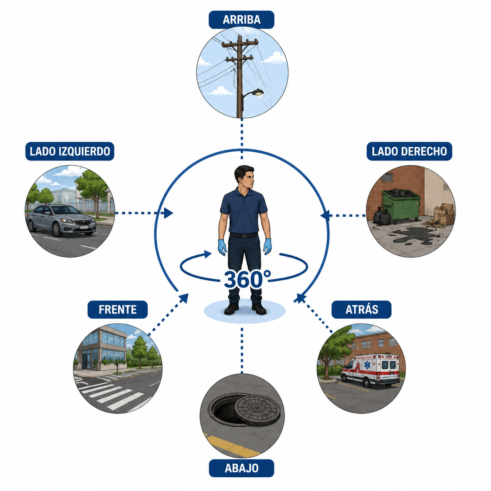
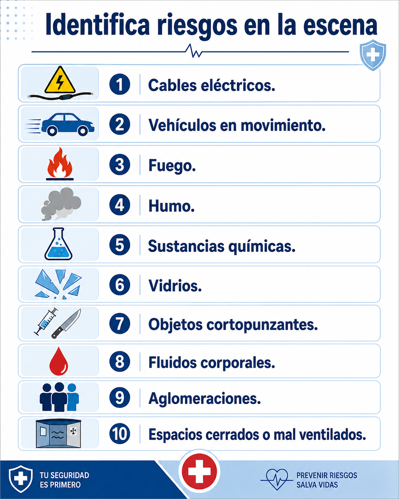

09 · Antes de atender
Seguridad de la escena
Antes de atender a una persona, verificá que la escena sea segura. Tu seguridad como primer respondiente es prioritaria. Si vos también resultás lesionado, no podrás ayudar.
Observá cuidadosamente · 6 direcciones

Identificá riesgos comunes

Si la escena no es segura, no ingreses. Solicitá apoyo especializado y esperá hasta que el riesgo sea controlado.
Atención
No te conviertas en una segunda víctima
Tu propia seguridad es prioritaria. Sin vos, no hay quien ayude.
No hacer
No ingreses con riesgos activos
No entres a una escena con riesgo eléctrico, fuego, tránsito activo o sustancias peligrosas.
Tener en cuenta
Si el riesgo no puede controlarse, esperá ayuda especializada
Hay situaciones donde solo profesionales con equipo pueden actuar de forma segura.